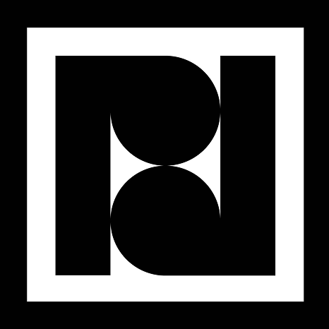

Psycodrummers

Psycodrummers è un progetto musicale che esplora le possibilità delle percussioni industriali in modo non convenzionale, costruendo performance live ad alto impatto emotivo dove la potenza delle percussioni si unisce alla precisione della coreografia. Il gruppo, fondato in Italia nel 2015 e composto da undici percussionisti, trae ispirazione dalla tradizione africana e dall’universo della world music, aprendosi però a contaminazioni funk ed elettroniche per creare performance energiche dal carattere tribale e contemporaneo. Gli strumenti utilizzati sono costruiti direttamente dai musicisti attraverso il recupero di materiali industriali e plastica riciclata, trasformando elementi di scarto in strumenti performativi e identitari.
L’obiettivo del progetto era creare una presenza digitale capace di riflettere l’energia, l’impatto visivo e l’identità artistica della band attraverso un’esperienza immersiva e moderna.
Brand Identity
Prima della progettazione dell’interfaccia è stata definita una proposta di brand identity per costruire una direzione visiva coerente con il linguaggio della band. L’identità visiva è stata sviluppata attorno a un’estetica industriale e contemporanea, utilizzando una palette dark ad alto contrasto combinata con accenti blu per enfatizzare elementi interattivi e contenuti principali. La tipografia scelta è Montserrat, selezionata per il suo carattere geometrico e moderno, in grado di mantenere leggibilità e forte impatto visivo anche nelle sezioni più dinamiche del sito. Sono stati inoltre definiti:
- Palette colori
- Gerarchia tipografica
- Stile fotografico
- Componenti UI preliminari
- Proposte di header e footer
Wireframes, Layout Exploration, Final UI
La fase iniziale del progetto è stata dedicata alla definizione della struttura delle pagine attraverso wireframe preliminari e studi di layout. Questo processo ha permesso di organizzare i contenuti principali del sito, eventi, video, gallery e informazioni sulla band, mantenendo una navigazione chiara e una forte attenzione all’impatto visivo. Sono state esplorate diverse soluzioni per struttura dell’homepage, disposizione dei contenuti, navigazione principale, organizzazione delle sezioni multimediali I wireframe sono stati successivamente convertiti in mockup ad alta fedeltà all’interno di Figma.
Durante la fase di progettazione sono state sviluppate diverse varianti visive per permettere al cliente di valutare differenti approcci estetici e funzionali. In particolare sono state esplorate:
- Tre varianti di header e footer
- Diverse soluzioni per la sezione About
- Differenti trattamenti fotografici e background
- Alternative per la navigazione del sito
Le proposte hanno aiutato a individuare una soluzione finale coerente con l’identità energica e industriale della band.
Il design finale è stato sviluppato per trasmettere il ritmo e l’energia delle performance live attraverso un’interfaccia immersiva e ad alto contrasto. L’utilizzo di sezioni full-width, immagini ad alto impatto e componenti minimali ha permesso di dare centralità ai contenuti visivi e video della band, mantenendo allo stesso tempo una navigazione semplice e intuitiva. Particolare attenzione è stata dedicata alla responsive design, assicurando coerenza visiva ed esperienza utente ottimale su desktop e dispositivi mobile.
WordPress Development
Dopo la fase di progettazione il sito è stato implementato in WordPress, trasformando i mockup realizzati in Figma in un sito completamente navigabile e responsive. Lo sviluppo è stato orientato a mantenere massima fedeltà al design originale, garantendo allo stesso tempo semplicità di gestione dei contenuti per il cliente. Sono state curate:
- Implementazione responsive
- Ottimizzazione delle immagini
- Gestione delle sezioni dinamiche
- Struttura facilmente aggiornabile
È possibile visualizzare il sito al seguente link.